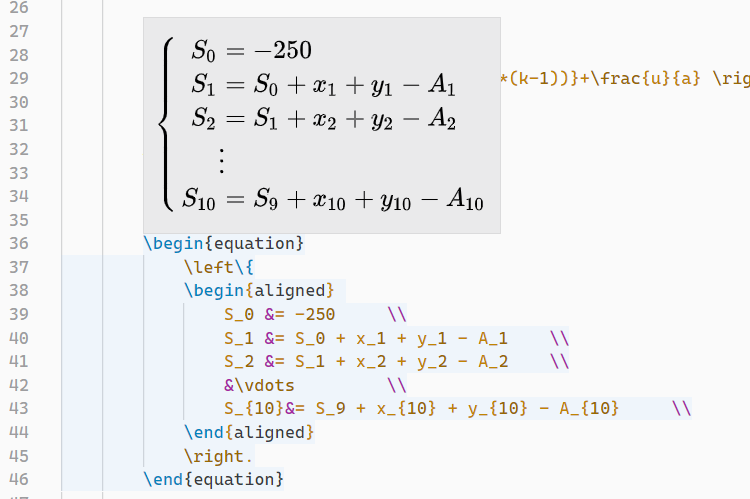
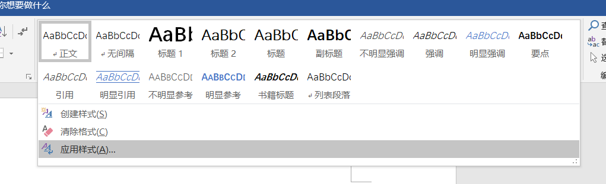
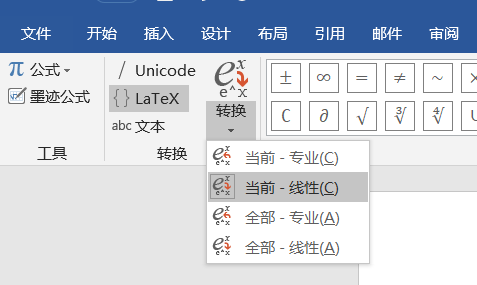
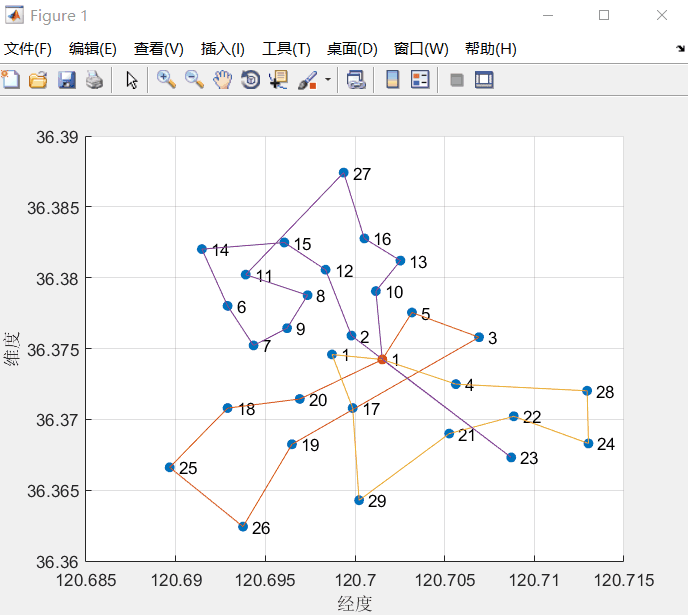
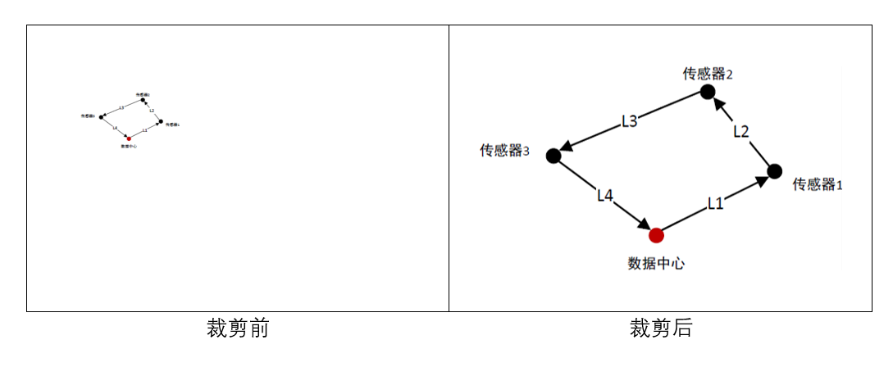

<!DOCTYPE html>
<html>
<head><meta name="generator" content="Hexo 3.9.0">
  <!-- hexo-inject:begin --><!-- hexo-inject:end --><meta charset="utf-8">
  <meta http-equiv="X-UA-Compatible" content="IE=edge">
  
  <title>准备数学建模国赛的心得体会 | uint128&#39;s Blog</title>
  <meta name="description" content="uint128&#39;s blog">
  <meta name="keywords" content="uint128,uint128&#39;s blog,uint128.com">
  <meta name="HandheldFriendly" content="True">
  <meta name="apple-mobile-web-app-capable" content="yes">
  <link rel="shortcut icon" href="/">
  <link rel="alternate" href="/atom.xml" title="uint128's Blog">
  <meta name="viewport" content="width=device-width, initial-scale=1, maximum-scale=1">
  <meta name="description" content="😂我对准备数模国赛的一些看法，仅供参考。">
<meta name="keywords" content="数学建模">
<meta property="og:type" content="article">
<meta property="og:title" content="准备数学建模国赛的心得体会">
<meta property="og:url" content="https://uint128.com/2021/05/11/准备数学建模国赛的心得体会/index.html">
<meta property="og:site_name" content="uint128&#39;s Blog">
<meta property="og:description" content="😂我对准备数模国赛的一些看法，仅供参考。">
<meta property="og:locale" content="zh-cn">
<meta property="og:image" content="https://uint128.com/2021/05/11/准备数学建模国赛的心得体会/QQ截图20210514144002.png">
<meta property="og:image" content="https://uint128.com/2021/05/11/准备数学建模国赛的心得体会/QQ截图20210514140952.png">
<meta property="og:image" content="https://uint128.com/2021/05/11/准备数学建模国赛的心得体会/QQ截图20210514143234.png">
<meta property="og:image" content="https://uint128.com/2021/05/11/准备数学建模国赛的心得体会/matlab.gif">
<meta property="og:image" content="https://uint128.com/2021/05/11/准备数学建模国赛的心得体会/QQ截图20210514151449.png">
<meta property="og:updated_time" content="2021-05-14T12:51:32.123Z">
<meta name="twitter:card" content="summary">
<meta name="twitter:title" content="准备数学建模国赛的心得体会">
<meta name="twitter:description" content="😂我对准备数模国赛的一些看法，仅供参考。">
<meta name="twitter:image" content="https://uint128.com/2021/05/11/准备数学建模国赛的心得体会/QQ截图20210514144002.png">
    
  <link href="https://fonts.googleapis.com/css?family=Inconsolata|Titillium+Web" rel="stylesheet">
  <link href="https://fonts.googleapis.com/css?family=Roboto+Mono" rel="stylesheet">
  <link href="//cdnjs.cloudflare.com/ajax/libs/node-waves/0.7.5/waves.min.css" rel="stylesheet">
  <link rel="stylesheet" href="/style.css">
  <script>
    function setLoadingBarProgress(num) {
      document.getElementById('loading-bar').style.width=num+"%";
    }
  </script>
  <script src="/js/md5.js"></script>
<link rel="alternate" href="/atom.xml" title="uint128's Blog" type="application/atom+xml"><!-- hexo-inject:begin --><!-- hexo-inject:end -->
</head>
</html>
<body>
  <!-- hexo-inject:begin --><!-- hexo-inject:end --><div id="loading-bar-wrapper">
  <div id="loading-bar"></div>
</div>


  <script>setLoadingBarProgress(20)</script> 
  <header class="l_header">
	<div class='wrapper'>
		<div class="nav-main container container--flex">
			<a class="logo flat-box" href='/' >
				uint128's Blog
			</a>
			<div class='menu'>
				<ul class='h-list'>
					
						<li>
							<a class='flat-box nav-home' href='/'>
								Home
							</a>
						</li>
					
						<li>
							<a class='flat-box nav-archives' href='/archives'>
								Archives
							</a>
						</li>
					
						<li>
							<a class='flat-box nav-about' href='/about'>
								About
							</a>
						</li>
					
				</ul>
				<div class='underline'></div>
			</div>
			
				<div class="m_search">
					<form name="searchform" class="form u-search-form">
						<input type="text" class="input u-search-input" placeholder="Search" />
						<span class="icon icon-search"></span>
					</form>
				</div>
			
			<ul class='switcher h-list'>
				
					<li class='s-search'><a href='javascript:void(0)'><span class="icon icon-search flat-box"></span></a></li>
				
				<li class='s-menu'><a href='javascript:void(0)'><span class="icon icon-menu flat-box"></span></a></li>
			</ul>
		</div>
		
		<div class='nav-sub container container--flex'>
			<a class="logo" class="flat-box" href='javascript:void(0)'>
				Word of Forks
			</a>

			<ul class='switcher h-list'>
				<li class='s-comment'><a href='javascript:void(0)'><span class="icon icon-chat_bubble_outline flat-box"></span></a></li>
				<li class='s-top'><a href='javascript:void(0)'><span class="icon icon-arrow_upward flat-box"></span></a></li>
				<li class='s-toc'><a href='javascript:void(0)'><span class="icon icon-format_list_numbered flat-box"></span></a></li>
			</ul>
		</div>
	</div>
</header>
<aside class="menu-phone">
	<nav>
		
			<a href="/" class="nav-home nav">
				Home
			</a>
		
			<a href="/archives" class="nav-archives nav">
				Archives
			</a>
		
			<a href="/about" class="nav-about nav">
				About
			</a>
		
	</nav>
</aside>

    <script>setLoadingBarProgress(40);</script>
  <div class="l_body">
    <div class='container clearfix'>
      <div class='l_main'>
        <article id="post-准备数学建模国赛的心得体会"
  class="post white-box article-type-post"
  itemscope itemprop="blogPost">
	<section class='meta'>
	<h2 class="title">
  	<a href="/2021/05/11/准备数学建模国赛的心得体会/">
    	准备数学建模国赛的心得体会
    </a>
  </h2>
	<time>
	  5月 11, 2021
	</time>
	
	</section>
	
		<section class="toc-wrapper"><ol class="toc"><li class="toc-item toc-level-2"><a class="toc-link" href="#关于全国大学生数学建模竞赛"><span class="toc-number">1.</span> <span class="toc-text">关于全国大学生数学建模竞赛</span></a><ol class="toc-child"><li class="toc-item toc-level-3"><a class="toc-link" href="#准备国赛的时间线"><span class="toc-number">1.1.</span> <span class="toc-text">准备国赛的时间线</span></a></li><li class="toc-item toc-level-3"><a class="toc-link" href="#我对组建队伍的想法"><span class="toc-number">1.2.</span> <span class="toc-text">我对组建队伍的想法</span></a></li></ol></li><li class="toc-item toc-level-2"><a class="toc-link" href="#数学建模竞赛需要学习的技能"><span class="toc-number">2.</span> <span class="toc-text">数学建模竞赛需要学习的技能</span></a><ol class="toc-child"><li class="toc-item toc-level-3"><a class="toc-link" href="#关于论文写作与排版"><span class="toc-number">2.1.</span> <span class="toc-text">关于论文写作与排版</span></a><ol class="toc-child"><li class="toc-item toc-level-4"><a class="toc-link" href="#Latex"><span class="toc-number">2.1.1.</span> <span class="toc-text">Latex</span></a></li><li class="toc-item toc-level-4"><a class="toc-link" href="#Word"><span class="toc-number">2.1.2.</span> <span class="toc-text">Word</span></a></li></ol></li><li class="toc-item toc-level-3"><a class="toc-link" href="#关于编程和算法"><span class="toc-number">2.2.</span> <span class="toc-text">关于编程和算法</span></a><ol class="toc-child"><li class="toc-item toc-level-4"><a class="toc-link" href="#Matlab"><span class="toc-number">2.2.1.</span> <span class="toc-text">Matlab</span></a></li><li class="toc-item toc-level-4"><a class="toc-link" href="#Lingo"><span class="toc-number">2.2.2.</span> <span class="toc-text">Lingo</span></a></li><li class="toc-item toc-level-4"><a class="toc-link" href="#Mathematica"><span class="toc-number">2.2.3.</span> <span class="toc-text">Mathematica</span></a></li><li class="toc-item toc-level-4"><a class="toc-link" href="#Python"><span class="toc-number">2.2.4.</span> <span class="toc-text">Python</span></a></li><li class="toc-item toc-level-4"><a class="toc-link" href="#R语言"><span class="toc-number">2.2.5.</span> <span class="toc-text">R语言</span></a></li><li class="toc-item toc-level-4"><a class="toc-link" href="#SPSS-Statistics"><span class="toc-number">2.2.6.</span> <span class="toc-text">SPSS Statistics</span></a></li></ol></li><li class="toc-item toc-level-3"><a class="toc-link" href="#关于作图"><span class="toc-number">2.3.</span> <span class="toc-text">关于作图</span></a></li><li class="toc-item toc-level-3"><a class="toc-link" href="#大量数据预处理"><span class="toc-number">2.4.</span> <span class="toc-text">大量数据预处理</span></a></li></ol></li><li class="toc-item toc-level-2"><a class="toc-link" href="#比赛期间的感受"><span class="toc-number">3.</span> <span class="toc-text">比赛期间的感受</span></a></li></ol></section>
	
	<section class="article typo">
  	<div class="article-entry" itemprop="articleBody">
    	<p>😂我对准备数模国赛的一些看法，仅供参考。<br><a id="more"></a><br>我参加过两届全国大学生数学建模竞赛，我在大一的时候经人推荐和两个学姐组队准备参加数学建模国赛，从此开启了数模之旅。（感谢推荐我的人和选择我的队友，让我能认识到这样一个有意思的比赛）</p>
<p>这篇博文总结了我这两次准备国赛的过程和方法，希望能帮到准备参赛的学弟学妹们。</p>
<h2 id="关于全国大学生数学建模竞赛"><a href="#关于全国大学生数学建模竞赛" class="headerlink" title="关于全国大学生数学建模竞赛"></a>关于全国大学生数学建模竞赛</h2><p>全国大学生数学建模竞赛一般在九月份进行，差不多是刚开学的第一周的周末。市赛的比赛结果比较快，一般国庆节之后就能有结果。和市赛结果一起出来的，是推荐国奖的队伍名单。推荐国奖不代表一定能拿到国奖，推荐国奖的结果一般在十一月或者十二月出来。</p>
<p>数模国赛总共有 5 道题，有 3 题是本科组（以前只有 2 题），有 2 题是专科组。本科组的 3 题的出题方向是有一定规律的。</p>
<p>规律性最强的是 C 题，它往往和统计有关，有大量的数据需要处理（但是国赛也有可能不提供数据，比如 2019 年的 C 题的数据需要自己去找）。其次是 A 题，2019 年和 2020 年的 A 题都和工业生产有关，有相关专业背景会更好做（我大一的时候看 2019 年的 A 题，当时还没学机械设计基础，所以连凸轮都不认识，题目都没读懂）。</p>
<h3 id="准备国赛的时间线"><a href="#准备国赛的时间线" class="headerlink" title="准备国赛的时间线"></a>准备国赛的时间线</h3><p>我校对数学建模竞赛是相当重视的。一般在上半年就会开始校赛培训（以网课的形式），还会有数模的宣讲会以及历年获奖选手的经验分享会。然后会组织一次数学建模校赛。数学建模校赛考虑到大家都有课，比赛时长是一周，在课余时间完成比赛。</p>
<p>校赛之后就会组织报名国赛，以及分配指导老师。报名国赛的同学需要在放暑假后留校一星期进行暑期培训（2020 年的暑期培训因为疫情改成网课了，非常可惜，不清楚以后还有没有）。暑期培训除了上课还有一次模拟比赛，这次模拟赛由指导老师完成讲评。</p>
<p>在暑假期间，学校还可能会组织参与深圳杯比赛和重庆市地区的比赛，作为练习。我建议参加深圳杯的比赛，因为深圳杯的题目质量还是不错的，认真完成提交作品，说不定能收获一个大奖。其他的比赛可以看精力决定要不要参加。</p>
<p>在正式国赛开始前还会有第二次模拟赛，作为最终练习。</p>
<p>模拟赛的题目好像都是用的其他学校的题目，这些题目的难度还是偏大的，我感觉比国赛都要难，所以做不出来也不要放心上。</p>
<h3 id="我对组建队伍的想法"><a href="#我对组建队伍的想法" class="headerlink" title="我对组建队伍的想法"></a>我对组建队伍的想法</h3><p>关于组建队伍，我经常听到一种组队的说法，即数模组队需要一人建模，一人编程，一人写作。</p>
<p>关于这个说法，我有不同的看法。数模的队伍确实要<strong>有人建模</strong>、<strong>有人编程</strong>和<strong>有人写作</strong>，但不是把这三项任务分别分到一个人身上。我认为建模可以三个人一起来，写作则是谁建模谁写作，编程的任务实际上没有很重，只需要一个人就好了。</p>
<p>我两次参赛的队伍都是这样实行的。我主要负责编程和排版（第一个队伍里只有我对 Latex 比较熟，因此排版就全交给我了）。建模部分虽然我不擅长，但我也会帮一点忙。对于一些简单的问题，我会尝试自己解决，然后让队友去思考后面更复杂的问题。我也会学习我队友建立的数学模型，这样在需要编程解模型的地方，我才好写出程序。</p>
<h2 id="数学建模竞赛需要学习的技能"><a href="#数学建模竞赛需要学习的技能" class="headerlink" title="数学建模竞赛需要学习的技能"></a>数学建模竞赛需要学习的技能</h2><h3 id="关于论文写作与排版"><a href="#关于论文写作与排版" class="headerlink" title="关于论文写作与排版"></a>关于论文写作与排版</h3><p>论文写作和排版，选择 Latex 还是 Word？很多人认为 Latex 比 Word 更难，但是 Word 想要做到高效排版，可能不比 Latex 简单。</p>
<p>因为已经有前辈做好了数模国赛的 Latex 模板，所以只需要很少的 Latex 知识就可以用 Latex 来写数模国赛的论文了（数模美赛也有现成的模板）。</p>
<h4 id="Latex"><a href="#Latex" class="headerlink" title="Latex"></a>Latex</h4><p>网上有很多的 Latex 入门教程，篇幅不长，用来入门非常适合。</p>
<p>但是如果想系统地了解 Latex，我建议阅读刘海洋的《Latex 入门》。（来自网络，可能失效: <a href="https://yun.weicheng.men/Book/LaTeX%E5%85%A5%E9%97%A8.pdf" target="_blank" rel="noopener">PDF下载</a>）</p>
<p>不管是网上的教程还是《Latex 入门》，都有讲如何安装 Latex 发行版。因此这篇文章不打算展开讲如何安装 Latex 发行版。但是这里我提供 TexLive 发行版的下载地址，以免下载到旧版本，或者忍受百度网盘的缓慢速度。</p>
<blockquote>
<p>TexLive 的下载地址(中国科学技术大学镜像站): <a href="https://mirrors.ustc.edu.cn/CTAN/systems/texlive/Images/" target="_blank" rel="noopener">https://mirrors.ustc.edu.cn/CTAN/systems/texlive/Images/</a><br>TexLive 的下载地址(重庆大学镜像站): <a href="https://mirrors.cqu.edu.cn/CTAN/systems/texlive/Images/" target="_blank" rel="noopener">https://mirrors.cqu.edu.cn/CTAN/systems/texlive/Images/</a><br>获取TexLive ISO镜像的官网页面：<a href="https://www.tug.org/texlive/acquire-iso.html" target="_blank" rel="noopener">https://www.tug.org/texlive/acquire-iso.html</a><br>TexLive 官网介绍的安装方法: <a href="https://www.tug.org/texlive/windows.html" target="_blank" rel="noopener">https://www.tug.org/texlive/windows.html</a></p>
</blockquote>
<p>要使用 Latex 排版数模论文，要学的 Latex 知识不会很多，所以不用担心学不会。</p>
<p>首先你需要学会使用现成的模板，比如数模国赛的模板可以在 <a href="https://github.com/latexstudio/CUMCMThesis" target="_blank" rel="noopener">github.com/latexstudio/CUMCMThesis</a> 里找到，数模美赛的模板可以在 <a href="https://github.com/latexstudio-org/mcmthesis" target="_blank" rel="noopener">github.com/latexstudio-org/mcmthesis</a> 找到。</p>
<p>然后你需要学会使用 Latex 编写公式。我的学习方法是找一篇公式很多很复杂的论文，把里面的公式都写一遍(显示效果要一模一样，这里面可能涉及多行公式的对齐)。这个过程肯定会有很多困难，所以肯定会花很多时间在百度上，最后整理成自己的笔记，以后查自己的笔记本就快了。</p>
<p>最后你要学会插入图片和表格。Latex 的表格是很难用的，我推荐使用 <a href="https://www.tablesgenerator.com/" target="_blank" rel="noopener">tablesgenerator</a> 来生成 Latex 表格代码，可以明显改善体验。(这个工具支持粘贴 Excel 或者 Word 里的表格，所以你甚至可以在 Excel 里做好表格后粘贴到这个工具里生成 Latex 代码)</p>
<p>这里还要强调一个 Latex 的特性。在 Word 里，你的图片和表格放哪里完全由你说了算。但是在 Latex 里，默认是让 Latex 来管理你图片和表格的位置，Latex 会在合适的位置里插入图片和表格。比如这一页的空间已经放不下一张图片了，那么 Latex 会在下一页的某个位置放置这个图片。</p>
<p>对此我的解决方法是：不要管他，让 Latex 自己选择位置就好了。</p>
<p>所以，文章里尽量不要写 “如下图所示” 之类的文字，因为图片很可能不在你这段文字的下方。尽量用 “如图 \ ref{XXX} 所示” 的写法代替。</p>
<blockquote>
<p>提示： \ ref{XXX} 是创建交叉引用，XXX 是图片或者表格的标签，Latex 会自动将它替换成编号，比如可能替换成：<strong>如图 5 所示</strong></p>
</blockquote>
<p>Latex 编辑器有很多，如果熟悉 VSCode，也可以尝试以下 VSCode (+LaTeX Workshop插件) 来写 Latex。这个插件有一个预览公式的功能，写公式的时候不用编译就能先看到结果。</p>
<p></p>
<p>如果三个队友都使用 Latex 写作，可以用 <a href="https://cn.overleaf.com/login" target="_blank" rel="noopener">overleaf</a> 这个在线编辑器来同时编辑同一份文档。(但是这个网站国内访问速度很慢)</p>
<p>如果所有队友都会 git，也可以用 git + github/gitee 来实现一起编辑同一份文档。</p>
<h4 id="Word"><a href="#Word" class="headerlink" title="Word"></a>Word</h4><p>在数模中没用过 Word 来写作，所以我没什么能介绍的东西。</p>
<p>我推荐充分利用 Word 的样式功能，减少设置样式的工作量，可以提高排版效率。</p>
<p></p>
<p>另外就是 Office 2019 版本或者 Office 365 版本的 Word 支持用 Latex 编写公式，如果想在 Word 里使用 Latex 可以升级到 2019 版本或者购买 365 版本。</p>
<p></p>
<h3 id="关于编程和算法"><a href="#关于编程和算法" class="headerlink" title="关于编程和算法"></a>关于编程和算法</h3><h4 id="Matlab"><a href="#Matlab" class="headerlink" title="Matlab"></a>Matlab</h4><p>如果有编程基础的话，学习 MATLAB 是很快的事情。学校图书馆有很多 MATLAB 的书，这些书里甚至有不少和数模是有关的。我借了四五本 MATLAB 的教材，挑了两本我能看懂的就开始学了。(现在有的书真的是不喜欢讲人话，所以我借书都会借四五本，把不讲人话的书都还回去)</p>
<p>MATLAB 只是个工具，不要花太多时间去专门学习，应该在有需要的时候再去查资料查文档。我入门 MATLAB 大概只用了一个星期，主要是浏览和尝试各种常见函数，也就是运行书上给的例子。(其实书上有很多概念对当时的我来说并不常见，比如我当时根本不认识线性规划和数值积分，我的策略是先了解，留个印象以后方便翻书)</p>
<p>MATLAB 的内置函数很多，而且用法和新函数随着版本升级一直在变化，是记不住也没必要记住的。如果有什么书列举了一大堆的函数用法，那一定不是什么好书。我认为学习 MATLAB 的很重要的一点是学会从 MATLAB 的官方文档里找到答案。</p>
<blockquote>
<p>MATLAB 官网的快速入门中文教程：<a href="https://ww2.mathworks.cn/help/matlab/getting-started-with-matlab.html" target="_blank" rel="noopener">https://ww2.mathworks.cn/help/matlab/getting-started-with-matlab.html</a><br>MATLAB 文档：<a href="https://ww2.mathworks.cn/help/index.html" target="_blank" rel="noopener">https://ww2.mathworks.cn/help/index.html</a></p>
</blockquote>
<p>有一些常用的制图函数，比较简单可以提前学一下记录到笔记本，要用的时候查资料快一点。</p>
<p>比如 plot(散点图)、fplot(函数画图)、gplot(邻接矩阵画图)、bar(条形图)、subplot(在一个窗口画子图)、xlabel(X坐标的标签)、ylabel(Y坐标的标签)、gtext(在图中写文字)、legend(显示图例)等。<br>还有指令 hold on; grid on;</p>
<p></p>
<p>最后我推荐一下 Matlab 的 cftool 工具箱，这是个曲线拟合工具箱，经常能用到。</p>
<h4 id="Lingo"><a href="#Lingo" class="headerlink" title="Lingo"></a>Lingo</h4><p>LINGO是专门用来求解优化模型的软件。我做的第一个数模的练习题就是用线性规划来解决下料问题，我因此自学了 LINGO。</p>
<p>我看的教材是网上翻到的一个小册子，出处已经找不到了，我感觉讲的还是比较清晰的。(<a href="LINGO.pdf">下载: LINGO入门</a>)</p>
<figure class="highlight vb"><table><tr><td class="gutter"><pre><span class="line">1</span><br><span class="line">2</span><br><span class="line">3</span><br><span class="line">4</span><br><span class="line">5</span><br><span class="line">6</span><br><span class="line">7</span><br><span class="line">8</span><br><span class="line">9</span><br><span class="line">10</span><br><span class="line">11</span><br><span class="line">12</span><br><span class="line">13</span><br><span class="line">14</span><br><span class="line">15</span><br><span class="line">16</span><br></pre></td><td class="code"><pre><span class="line">sets:</span><br><span class="line">  V/<span class="number">1.</span><span class="number">.56</span>/  :                ;</span><br><span class="line">  L/<span class="number">1.</span><span class="number">.10</span>/  :  CPT_L ,CPT_N ;</span><br><span class="line">  D(V,L)    : x               ;       </span><br><span class="line">endsets</span><br><span class="line"></span><br><span class="line">data:</span><br><span class="line">  CPT_L = <span class="number">265</span>  <span class="number">275</span>  <span class="number">290</span>  <span class="number">313</span>  <span class="number">328</span>  <span class="number">405</span>  <span class="number">411</span>  <span class="number">414</span>  <span class="number">415</span>  <span class="number">420</span>;</span><br><span class="line">  CPT_N = <span class="number">46</span> <span class="number">60</span> <span class="number">55</span> <span class="number">38</span> <span class="number">6</span> <span class="number">42</span> <span class="number">30</span> <span class="number">16</span> <span class="number">10</span> <span class="number">12</span>;</span><br><span class="line">enddata</span><br><span class="line"></span><br><span class="line">@<span class="keyword">for</span>(D:@gin(x));</span><br><span class="line"></span><br><span class="line">max = @sum(V(m): @sum(L(n): CPT_L(n)*x(m,n) )  );</span><br><span class="line">@<span class="keyword">for</span>(V(m): @sum(L(n): CPT_L(n)*x(m,n) )&lt;= <span class="number">2000</span> );</span><br><span class="line">@<span class="keyword">for</span>(L(n): @sum(V(m): x(m,n))= CPT_N(n));</span><br></pre></td></tr></table></figure>
<p>如果要用到线性规划，我会先用少量数据，编写 LINGO 程序来验证线性规划模型的正确性。</p>
<p>这是因为 LINGO 的语法比较接近自然语言，如果模型错了改起来比较方便。而 Matlab 线性规划函数(linprog)的参数是一个个矩阵，不如 LINGO 的语法直观。</p>
<p>求结果的时候，由于数据很多，而且往往需要预处理，我会用 Matlab 编程来求解最终答案。</p>
<h4 id="Mathematica"><a href="#Mathematica" class="headerlink" title="Mathematica"></a>Mathematica</h4><p>Mathematica 是我学习数学的工具。它不像别的编程语言需要创建一个源代码文件来写代码，Mathematica 需要创建一个笔记本来写代码。Mathematica 可以把计算的过程一步一步显示出来，这是我最喜欢的功能之一。</p>
<p>Matlab 有的功能 Mathematica 基本都有，如果更喜欢 Mathematica 那么可以用它来代替 Matlab 也不是不可以的。</p>
<p>但我比赛中并没有用过 Mathematica，因为我用它没有 Matlab 熟练。</p>
<h4 id="Python"><a href="#Python" class="headerlink" title="Python"></a>Python</h4><p>我没有在比赛中用过 Python，但是我的队友使用 Python 进行多元回归分析和使用现成的智能优化算法 (<a href="https://github.com/guofei9987/scikit-opt" target="_blank" rel="noopener">scikit-opt</a>)。</p>
<p>我推荐学习一下这个智能优化算法库，它内置了遗传算法、模拟退火等常用的智能优化算法。我在深圳杯的比赛是自己写的模拟退火算法，看了好几篇论文当场学会当场写算法，如果我当时知道有这个库，我可以节约一个下午的时间。</p>
<h4 id="R语言"><a href="#R语言" class="headerlink" title="R语言"></a>R语言</h4><p>我也没在比赛中使用过 R 语言，因为我不会。但是我应用统计专业的队友是会的。数模暑期培训也会简单讲解这个 R 语言，它在解决统计相关的问题很有用。</p>
<h4 id="SPSS-Statistics"><a href="#SPSS-Statistics" class="headerlink" title="SPSS Statistics"></a>SPSS Statistics</h4><p>这个软件我也提供不了什么有用的信息，因为我自己也不会。我认为要在学习了应用回归分析之后才能正确地使用 SPSS，而不是自己根据网络的教程胡乱分析(说的就是我自己了)。</p>
<p>关于应用回归分析，我的指导老师推荐了一本书是《应用回归分析（第5版）》(何晓群，刘文卿 著)。</p>
<h3 id="关于作图"><a href="#关于作图" class="headerlink" title="关于作图"></a>关于作图</h3><p>函数图、散点图等图像可以用上面提到的 Matlab 来完成，这里主要说的是流程图。</p>
<p>流程图可以用 PowerPoint 或者 Visio 来完成。Visio 其实也是 Office 的一部分，不过要单独下载。(下载地址，来自网络，可能失效：<a href="https://msdn.itellyou.cn/" target="_blank" rel="noopener">msdn.itellyou.cn</a>；<a href="https://tianyou.xyhelp.cn/" target="_blank" rel="noopener">xyhelp.cn</a>)</p>
<blockquote>
<p>tianyou 是交大以前的软件下载站，现在已经无人维护。xyhelp 是交大学长的创业项目，里面的软件基本都有校园网内网的下载地址，只要连上校园网就可以下载，内网传输速度更快。</p>
</blockquote>
<p>高版本的 Office 已经支持直接导出为 PDF，我推荐将画好的图像导出为 PDF 再插入到 Latex 文章里。这样保存、插入到论文里的图片是矢量的，怎么放大都是清晰的。</p>
<p>从 Office 文档里导出的 PDF 一般都有白边，可以使用 Latex 发行版里自带的一个 PDF 裁剪工具(pdf-crop)，将白边去掉。</p>
<p></p>
<p>pdfcrop 是个命令行工具，装好 Latex 发行版之后一般就能直接用了。</p>
<figure class="highlight bash"><table><tr><td class="gutter"><pre><span class="line">1</span><br><span class="line">2</span><br></pre></td><td class="code"><pre><span class="line"><span class="comment"># 在 img_001.pdf 所在目录执行 pdfcrop：</span></span><br><span class="line">pdfcrop img_001.pdf</span><br></pre></td></tr></table></figure>
<p>上面的指令会在 img_001.pdf 目录下生成一个 img_001-crop.pdf。</p>
<h3 id="大量数据预处理"><a href="#大量数据预处理" class="headerlink" title="大量数据预处理"></a>大量数据预处理</h3><p>有的比赛会发布一个很大的数据集，格式通常是 csv 文件。这个类型的文件可以用 excel 打开，但是尽量别这样做，excel 需要很长时间（长达几分钟）才能打开。</p>
<p>csv 文件是纯文本文件，可以用 VSCode 等文本编辑器打开，这样速度会快很多。</p>
<p>其实我不会处理数据的，所以接下来我写不下去了。🤣</p>
<h2 id="比赛期间的感受"><a href="#比赛期间的感受" class="headerlink" title="比赛期间的感受"></a>比赛期间的感受</h2><p>比赛第一天的下午 18 点出题到第四天的晚上 20 点结束，这期间的节奏是一种先慢后快的节奏。</p>
<p><strong>数模选题很重要，数模国赛没有简单的题目，数模的选题选的是最适合自己团队的题目。</strong></p>
<p>我认为我两次比赛的队伍都很适合解决和运筹学相关的题目，因为平时模拟赛都对这种题目更有感觉。如果选题确实不对，是可以大胆考虑换题的。我两次比赛都有过换题的经历，一次换成功了，第二次最终没有换题。</p>
<p>我第一次比赛是第二天上午决定题目，然后第三天上午换题，最后拼命完成。这一次比赛我们一开始选的是 A 题，之所以选这个题是因为 B 题没看懂而C 题的数据不好找。我们这样选题完全没考虑团队的做题经验，我们从没做过 A 题这样的题目。可以说我们选题很失败，我们做不出来 A 题。</p>
<p>我们为了能够交上作品，我们换了 C 题，换题的时候已经浪费了一半的时间了，所以第三天的晚上我们不得不通宵写论文了。</p>
<p>做 C 题的时候才发现，我们的队伍更适合做 C 题，这个题对我们来说并没有选题时想象的难，最后做的非常快及时完成了作品。</p>
<p>第二次比赛实际上我们选对了题，我觉得那个题真的很适合我们队伍，但是我们没有解题的思路，所以考虑换题。那个时候是第二天晚上，即使是换题也来得及。但是凭借上一次比赛的经验，我从我们队伍以前的选题情况来看，我很确定我们不适合另外两道题。这一次我们选的是 B 题，“走出沙漠” 的题目。另外两道题分别是 A 题 “炉温曲线” 和 C 题 “信贷决策”。</p>
<p>我们队伍在练习赛中从未选过 A 题这种类型，所以我心里压根没有想过换到 A 题。C 题这种类型的题目我们只做过 1 次，而且做的很糟糕，我对换到 C 题也不抱希望。</p>
<p>但是我也怕死磕 B 题，错失了换题的最佳时机。所以我和我的队友说先放下 B 题，找一找 C 题的资料，看看 C 题有没有思路，如果有我们就换题。</p>
<p>一开始我也在找 C 题资料，但是我发现我查到的方法，我都没见过，不仅如此，我不知道这些方法能不能套用到这个 C 题上。这时候我就知道，我们不可能换到 C 题的。如果随便搜到个方法就拿来套用，连适用条件都搞不清楚，这样做出的结果连自己都骗不过。所以后来我又回到 B 题，继续找 B 题的解法了。</p>
<p>最终我们队伍决定死磕 B 题。</p>

  	</div>
	  
	  <div class="article-tags tags">
      
        <a href="/tags/数学建模/">数学建模</a>
      
	  </div>
    
		
	
		<div class="art-item-footer">
				
					<span class="art-item-left"><i class="icon icon-chevron-thin-left"></i>prev：<a href="/2021/05/18/深入理解计算机系统之优化程序性能-第五章-笔记/" rel="prev"  title="《深入理解计算机系统》之优化程序性能(第五章)笔记">
						《深入理解计算机系统》之优化程序性能(第五章)笔记 
					</a></span>
				
				
					<span class="art-item-right">next：<a href="/2021/05/08/C-和C-的值类型与引用类型/" rel="next"  title="C++和C#的值类型与引用类型">
						C++和C#的值类型与引用类型
					</a><i class="icon icon-chevron-thin-right"></i></span>
				
		</div>
	
	</section>


	

</article>


	<div id="gitalk-container"></div>
	<link rel="stylesheet" href="https://unpkg.com/gitalk/dist/gitalk.css">

<script src="https://unpkg.com/gitalk/dist/gitalk.min.js"></script>

 <script type="text/javascript">
      var gitalk = new Gitalk({
        clientID: '53e3c578fcb7b7b1a4da',
        clientSecret: '74433ee77d6e13fd635b82add519e143ac791726',
        repo: 'cyanray.github.io',
        owner: 'cyanray',
        admin: ['cyanray'],
        id: CryptoJS.MD5(location.pathname).toString(),
        labels: ['Gitalk'],
        perPage: 15,
        pagerDirection: 'last',
        createIssueManually: true,
        distractionFreeMode: false
      })

      gitalk.render('gitalk-container')
 </script>


<script>
	window.subData = {
		title: '准备数学建模国赛的心得体会',
		tools: true
	}
</script>

      </div>
      <aside class='l_side'>
        
  <section class='m_widget about'>
    
            <div class='header'>
                uint128.com
            </div>
            <div class='content'>
                <div class='desc'>uint128, unsigned int.<br>Uint128 Is Not a Type with 128 bits.</div>
            </div>
</section>

  <section class='m_widget links'>
<div class='header'>Links</div>
<div class='content'>
    <ul class="entry">
    
        <li><a class="flat-box" target="_blank" href="https://github.com/cyanray">
            <div class='name'>My Github</div>
        </a></li>
    
        <li><a class="flat-box" target="_blank" href="https://yuanxingxing-yxx.github.io/">
            <div class='name'>星星的博客</div>
        </a></li>
    
        <li><a class="flat-box" target="_blank" href="http://www.h13studio.com/">
            <div class='name'>H13-Studio</div>
        </a></li>
    
        <li><a class="flat-box" target="_blank" href="http://quosimodo.cn/">
            <div class='name'>卡西莫多の礼物</div>
        </a></li>
    
        <li><a class="flat-box" target="_blank" href="http://www.dora-kong.com/">
            <div class='name'>哆啦控 - dora-kong.com</div>
        </a></li>
    
        <li><a class="flat-box" target="_blank" href="https://blog.icepie.net/">
            <div class='name'>icepie&#39;s blog</div>
        </a></li>
    
    </ul>
</div>
</section>

      </aside>
      <script>setLoadingBarProgress(60);</script>
    </div>
  </div>
  <footer id="footer" class="clearfix">

	<div class="social-wrapper">
  	
      
        <a href="https://github.com/cyanray" class="social github"
          target="_blank" rel="external">
          <span class="icon icon-github"></span>
        </a>
      
    
  </div>
  
  <div>Theme <a href='https://github.com/stkevintan/hexo-theme-material-flow' class="codename">MaterialFlow</a> designed by <a href="http://keyin.me/" target="_blank">Kevin Tan</a>.</div>
  
</footer>


  <script>setLoadingBarProgress(80);</script>
  

<script src="//apps.bdimg.com/libs/jquery/2.1.4/jquery.min.js"></script>
<script src='//cdnjs.cloudflare.com/ajax/libs/node-waves/0.7.5/waves.min.js'></script>
<script src="//cdnjs.cloudflare.com/ajax/libs/scrollReveal.js/3.3.2/scrollreveal.min.js"></script>
<script src="/js/jquery.fitvids.js"></script>
<script>
	var GOOGLE_CUSTOM_SEARCH_API_KEY = "";
	var GOOGLE_CUSTOM_SEARCH_ENGINE_ID = "";
	var ALGOLIA_API_KEY = "";
	var ALGOLIA_APP_ID = "";
	var ALGOLIA_INDEX_NAME = "";
  var AZURE_SERVICE_NAME = "";
  var AZURE_INDEX_NAME = "";
  var AZURE_QUERY_KEY = "";
  var BAIDU_API_ID = "";
  var SEARCH_SERVICE = "hexo";
  var ROOT = "/"||"/";
  if(!ROOT.endsWith('/'))ROOT += '/';
</script>
<script src="/js/search.js"></script>
<script src="/js/app.js"></script>


  
    <script type="text/x-mathjax-config">
      MathJax.Hub.Config({
          tex2jax: {
            inlineMath: [ ['$','$'], ["\\(","\\)"] ],
            processEscapes: true
          }
        });
      </script>
    
    <script type="text/x-mathjax-config">
      MathJax.Hub.Config({
            tex2jax: {
              skipTags: ['script', 'noscript', 'style', 'textarea', 'pre', 'code']
            }
          });
      </script>
    
    <script type="text/x-mathjax-config">
      MathJax.Hub.Queue(function() {
              var all = MathJax.Hub.getAllJax(), i;
              for(i=0; i < all.length; i += 1) {
                  all[i].SourceElement().parentNode.className += ' has-jax';
              }
          });
      </script>
    
    <script type="text/javascript" src="https://cdnjs.cloudflare.com/ajax/libs/mathjax/2.7.4/MathJax.js?config=TeX-MML-AM_CHTML">
    </script>
    
  <script>setLoadingBarProgress(100);</script><!-- hexo-inject:begin --><!-- Begin: Injected MathJax -->
<script type="text/x-mathjax-config">
  MathJax.Hub.Config("");
</script>

<script type="text/x-mathjax-config">
  MathJax.Hub.Queue(function() {
    var all = MathJax.Hub.getAllJax(), i;
    for(i=0; i < all.length; i += 1) {
      all[i].SourceElement().parentNode.className += ' has-jax';
    }
  });
</script>

<script type="text/javascript" src="https://cdnjs.cloudflare.com/ajax/libs/mathjax/2.7.4/MathJax.js?config=TeX-MML-AM_CHTML">
</script>
<!-- End: Injected MathJax -->
<!-- hexo-inject:end -->
</body>
</html>
